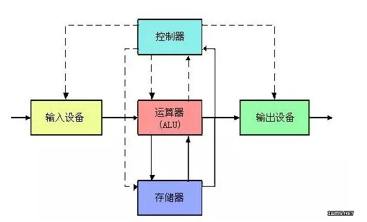
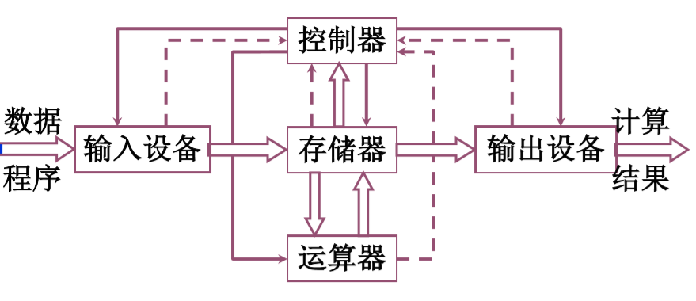
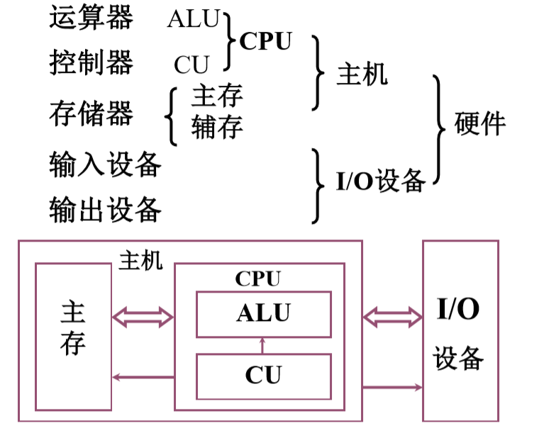

冯诺依曼体系 链接到标题
冯诺依曼简介 链接到标题
约翰·冯·诺依曼，美籍匈牙利数学家、计算机科学家、物理学家，毕业于苏黎世联邦工业大学，他是现代电子计算机与博弈论的重要创始人，被后人称为现代计算机之父、博弈论之父，并且他还改善了著名的蒙特卡洛算法。
1945 年 6 月约翰·冯·诺依曼与戈德斯坦、勃克斯等人，联名发表了一篇长达 101 页纸的报告，即计算机史上著名的“101 页报告”。在报告中冯·诺伊曼明确提出了计算机的体系架构。从 1951 年第一台电子计算机 EDVAC 开始，计算机经历了多次的更新换代，不管是最原始的、还是最先进的计算机，使用的仍然是冯·诺依曼最初设计的计算机体系结构。因此冯·诺依曼被世界公认为“计算机之父”，他设计的计算机系统结构，称为“冯诺依曼体系结构”。
冯诺依曼体系 链接到标题
冯诺依曼体系结构主要由五大部分组成，分别是控制器，运算器，存储器，输入设备和输出设备。至今为止，基本上所有的计算机也是遵循冯诺依曼体系所设计的，例如我们经常使用的手机，电脑，平板等等。
冯诺依曼提出的两个重要的思想，一个是存储程序的思想，另一个是二进制的思想，这两个思想在如今的计算机领域影响深远。
世界上第一台计算机 EDVAC，采用了上千个电子管所设计的，体积十分庞大，设计者采用十进制对指令和数据进行计算处理，但执行过程复杂，运行效率慢。十进制与二进制的区别在哪？冯诺依曼为何提出二进制的存储思想呢？因为在早期的计算机电子元件设计中，通常使用高低电压来表示信息，即高电压为 1，低电压为 0.所以如果要采用十进制进行数据的计算，将二进制信息转换成我们日常所熟悉的十进制后再去进行处理，大大增加了计算机指令的设计难度，而使用二进制则解决了这一问题，后世很多科学家也提出了二进制浮点数的计算，以及反码补码阶码的概念，使二进制成为了计算机设计的中心。所以在今后的计算机中无论是指令还是数据都采用二进制的方式进行存储和计算。

通常我们使用的计算机主要功能是负责运算，所以在冯诺依曼体系中以运算器为中心，而存储器负责存放指令和数据，指令和数据的计算和存储以及外部设备的连接也需要通过控制器进行控制。让我们排除输入输出设备之后，其实运算器，存储器和控制器才是整个计算机的核心，我们可以将三者看作一个黑箱子。当我们输入数据时，数据通过黑箱子，然后输出我们想要的结果，这便是图灵机的简单模型。
冯诺依曼体系的特点 链接到标题
- 计算机由五大部件组成，运算器，存储器，控制器，输入设备，输出设备。
- 指令和数据采用二进制方式进行存储。
- 指令由地址码和操作码组成。
- 运算器为中心。
- 存储程序为主要思想。
- 指令和数据都以同等地位存入存储器，并且可按地址访问。
冯诺依曼体系结构的改进 链接到标题
如上图所示，输入设备如果需要从存储器中存储信息，必须经过运算器，因此运算器可能成为计算机速度的瓶颈，如果可以使输入设备不经过运算器，直接访问存储器，可以减少运算器的工作量，因此有了以下以存储器为中心的结构。

由于现代计算机分为运算器，控制器，存储器，输入设备，输出设备。运算器(ALU)与控制器(CU)合并为 CPU，存储器分为主存与辅存，CPU 与存储器构成主机部分，主机与 IO 设备构成计算机硬件，可以根据计算机的层次进行设计。
